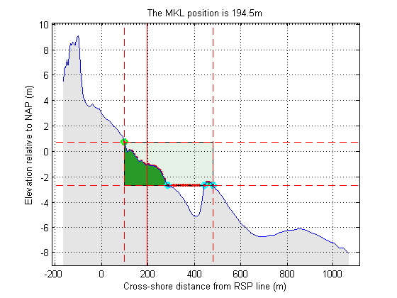

JarKus MKL calculations
This tutorial demonstrates how to calculate the MKL for a JarKus profile
Contents
Read in data
See the JarKus tutorial on reading data for a detailed explanation of this
url = jarkus_url; id = nc_varget(url,'id'); transect_nr = find(id==6001200)-1; year = nc_varget(url,'time'); year_nr = find(year == 1969)-1; xRSP = nc_varget(url,'cross_shore'); z = nc_varget(url,'altitude',[year_nr,transect_nr,1],[1,1,-1]); x = xRSP(~isnan(z)); z = z(~isnan(z));
As we want to calculate the MKL position, we need information on the mean high and low water levels.
MHW = nc_varget(url,'mean_high_water',transect_nr,1) MLW = nc_varget(url, 'mean_low_water',transect_nr,1)
MHW =
0.7200
MLW =
-0.9800
Calculating the MKL
To find out what JarKus funtions are available, just enter 'jarkus' in the command prompt or text editor and press tab. Matlab gives suggestions to complete the line. To figure out how the funtion works use help.
help jarkus
Contents of jarkus: jarkus_createtransectstruct - create jarkus transect struct jarkus_findCrossings - routine to find crossings of 2 profiles jarkus_getMKL - returns the cross shore coordinate of the volume based coastal indicator MKL jarkus_getVolume - generic routine to determine volumes on transects jarkus_getVolumeFast - generic routine to determine volumes on transects jarkus_grid2netcdf - converts Jarkus grid struct to netCDF-CF file jarkus_netcdf2grid - converts netCDF-CF file to Jarkus grid struct jarkus_readTransectDataNetcdf - transforms processed data to proper meta data format jarkus_transect2grid - converts Jarkus transect struct to Jarkus grid struct jarkus_transect2netcdf - converts Jarkus transect struct to netCDF-CF file jarkus_transect2oldtransect - converts Jarkus transect struct jarkus_updategrid - update Jarkus grid struct jarkus_url - returns the link to the jarkus netCDF.
jarkus_getMKL will do the job
UpperBoundary = MHW;
LowerBoundary = MLW-(MHW-MLW);
xMKL = jarkus_getMKL(x,z,UpperBoundary,LowerBoundary,'plot')
xMKL = 189.5355